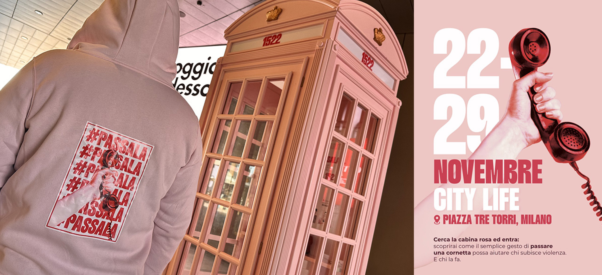
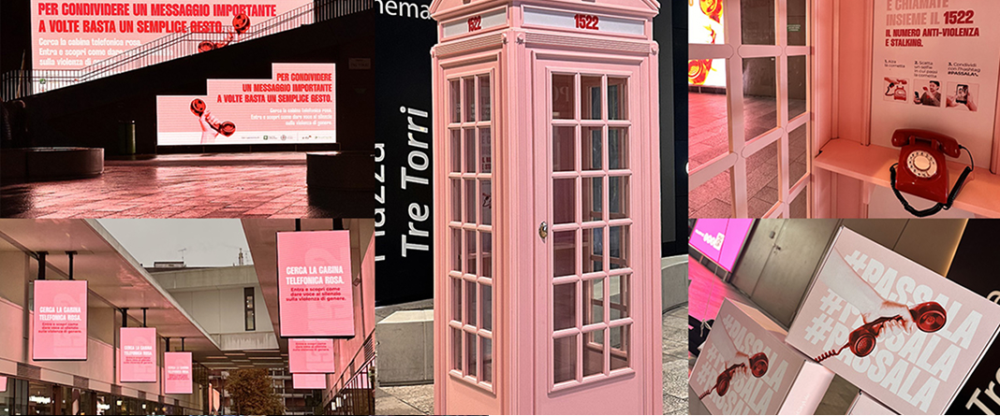

Installazione urbana
CABINA ROSA
La Cabina Rosa di A-Tono ETS: il giorno in cui Milano si è fermata ad ascoltare.
Un simbolo potente contro la violenza
In occasione della Giornata internazionale per l’eliminazione della violenza contro le donne, il 25 novembre, in CityLife a Milano è successo qualcosa di raro: la città, per qualche ora, ha rallentato.
In Piazza Tre Torri, la Cabina Rosa a sostegno del numero antiviolenza e antistalking 1522 ha richiamato centinaia di persone, guidate da una spettacolare domination degli schermi Mediamond che, come un filo luminoso, accompagnava i passanti fino all’installazione.
La cabina, una presenza d’altri tempi nel quartiere più contemporaneo di Milano, si è riempita senza sosta. Passanti, studenti, volontari, creator: ognuno entrava, ascoltava, usciva diverso. Dentro, i messaggi arrivavano con delicatezza: brevi dialoghi che raccontano la violenza tra le righe; quella che sfugge a tanti fino a quando quella violenza diventa reale, e ci si trova a ripetere “potevamo accorgerci prima”.

“La violenza, spesso, si racconta solo a metà. Serve qualcuno che ascolti, dall’altra parte, chiunque esso sia”, ha ricordato Anastasia Granato, presidentessa di A-Tono ETS. “Prestare attenzione può veramente cambiare le cose, prima che sia troppo tardi”.
Ed è esattamente quello che la giornata di ieri ha dimostrato: l’ascolto, quando accade, trasforma le persone e, speriamo, le cose.
Il percorso che ha portato fin qui
La Cabina Rosa è l’ultimo passo di un progetto che si è sviluppato in tre momenti:
Il silenzio che squilla. Un video teaser ha mostrato telefoni rossi che suonano in mezzo alla folla. Nessuno rispondeva, finché una voce, quella di un’operatrice del 1522, rompeva il buio dello schermo. Un invito chiaro: scegliere di agire.
Passala. Poi è arrivato il coinvolgimento dei creator, ognuno con una cornetta rossa da collegare al telefono: un simbolo potente, quasi fisico, che li invitava a parlare, ascoltare, intervenire. E ieri molti di loro erano lì, a “passare la cornetta” anche offline.
Cabina Rosa: l’installazione urbana. Dal 22 al 29 novembre la cabina rimarrà in Piazza Tre Torri, accanto a pannelli informativi che mostrano come riconoscere i segnali nascosti della violenza e come poter aiutare.
“Abbiamo scelto il linguaggio più immediato che esista: una chiamata. Ascoltarla è la prima azione che invitiamo a compiere”. ha spiegato Sergio Müller, Chief Communication Officer di A-Tono.
Un gesto semplice, quasi istintivo, eppure capace di aprire conversazioni profonde e forse cambiare le cose.
Una comunità che rispondeLa piazza è diventata un punto di incontro spontaneo: chi ascoltava, chi faceva domande, chi restava a leggere, chi rientrava per capire meglio. Un movimento silenzioso, fatto di piccoli gesti che insieme hanno creato una comunità temporanea.
“CityLife è un luogo che vive del dialogo tra persone, spazi e idee”, ha dichiarato Roberto Russo, Amministratore Delegato di SmartCityLife. “Siamo orgogliosi di ospitare un progetto che invita la città a fermarsi, ad ascoltare e a rispondere”. È esattamente quello che è accaduto.
Grazie. Di cuore. Grazie a chi è entrato nella Cabina Rosa. A chi ha ascoltato fino in fondo. Ai volontari, ai creator, ai passanti diventati partecipanti. E grazie a CityLife per l’accoglienza, a Mediamond per una visibilità che ha amplificato il messaggio in tutto il quartiere, e al Comune di Milano e alla Regione Lombardia per i patrocini che sostengono una causa che riguarda tutti.